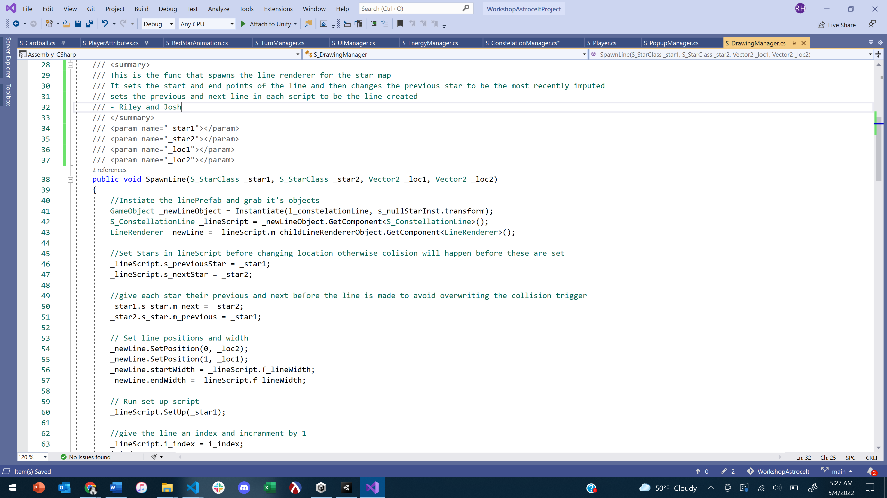
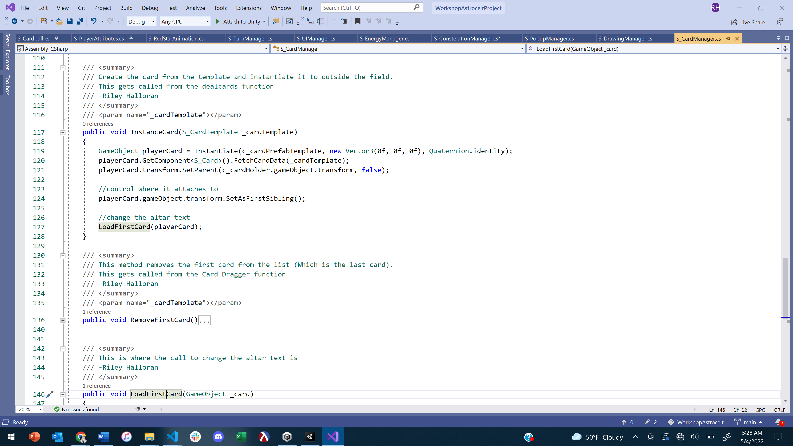
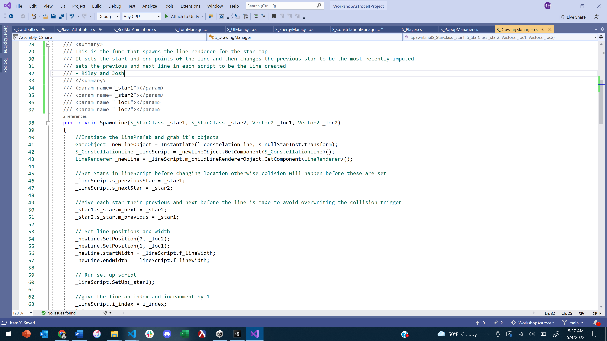
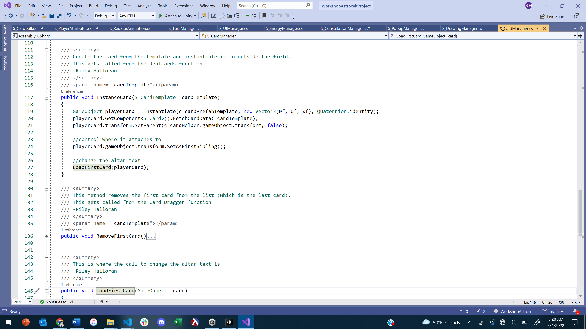

My Projects
Here you can find a breakdown of my projects, what I worked on specifically and code examples.
Erin and the Otherworld
 



Here are examples of my work while creating Erin and the Otherworld.
- The first two images are examples of the current in game screen and the editor
- Number 3 is a signlton script that we use in order to manage and access the other scripts in the game.
- Some sections of code containing the constellation manager which manages the list of the stars that have been clicked on
- A function that spawns a line based off two stars and their locations
- Lastly I have the card manager that not only shows how cards are spawned but also how functions are organised in the project
Below is a link to our Steam page which will will release April 6th, and then a free downloadable demo of our game from Itch.io
Madness Hunters
This are scripts covering my time working to produce the cancelled madness hunters. of the movement which was set up using the unity input action map, the function that pulls the allies,
- The first image is the game from in the editor
- The fixed update for the player character where movement ins implamented using the unity input action map
- Pull2 is the function that moves the ally character towards the player
- The fouth img is an implamentation of Raycasts so the player doesnt pull their ally into a wall
- Lastly is are the functions that the input action maps trigger in the project when the player wishes to pull the ally
Shell Texturing
This project was a graphics programming challenge created by Acerola. The goal was to implement shell texturing in Unity. I completed this challenge in HLSL using the Unity built in graphics pipeline